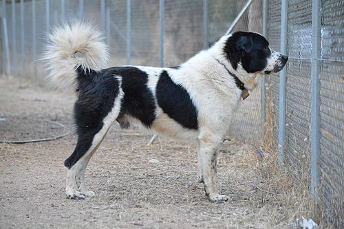
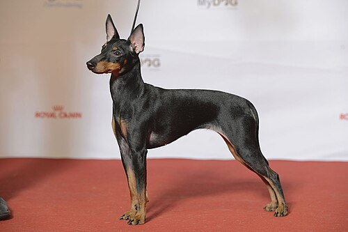
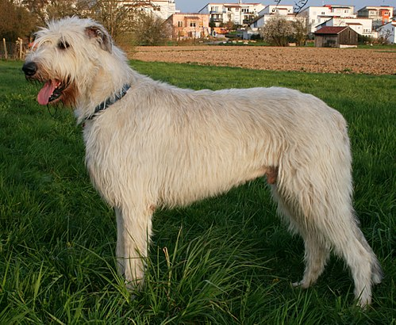

Наши домашние животные:
-
Бурмилла длинношёрстный

Бурмилла (англ. Burmilla) — порода кошек, появившаяся в 1981 году в результате случайной вязки бурманской кошки лилового окраса и персидского кота окраса шиншилла. Название породы происходит от слов Бурма + Шиншилла. Другое название породы — бурманская серебристая.
-
Гавана

Гавана — порода домашних кошек.
Гавана имеет очень характерную форму головы: длинную и узкую, с прямым профилем, миндалевидными глазами и большими, разведёнными в стороны ушами -
Мейн-кун

Мейн-кун (англ. Maine Coon) — порода кошек, которая произошла от кошек штата Мэн на северо-востоке США. Аборигенная порода кошек Северной Америки. Название «мейн-кун» является производным от двух слов. Первое — это название штата Мэн, а второе — производное от англ. raccoon, которое переводится как «енот». Старейшая американская порода кошек
-
Греческая овчарка
Греческая овчарка (греч. Ελληνικός Ποιμενικός) — это порода собак, выведенная в горных регионах Греции и традиционно используемая местными пастухами для помощи при охране скота. И для боёв. Греческая овчарка принадлежит к группе средних и крупных пород, обладает сильным, развитым и мускулистым телом. Эта собака может справиться с волком в одиночку.
-
Английский той-терьер
Английский той-терьер (англ. english toy terrier, англ. toy «игрушка»[1]) — порода собак, мелкий гладкошёрстный терьер. Выведен в Великобритании, признан Английским клубом собаководства (отнесён к группе той-пород). Английский той-терьер выведен на основе старого английского черно-подпалого терьера, его происхождение тесно переплетается с историей другой, более крупной, породы манчестер-терьер.
-
Ирландский волкодав
Ирландский волкодав (англ. Irish wolfhound, ирл. Cú Faoil) — порода охотничьих собак. Одна из самых больших собак в мире. Ирландские волкодавы использовались для травильной охоты на крупную дичь — волков и оленей. Характер спокойный, добрый.